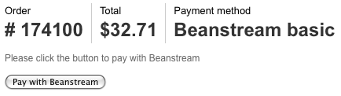
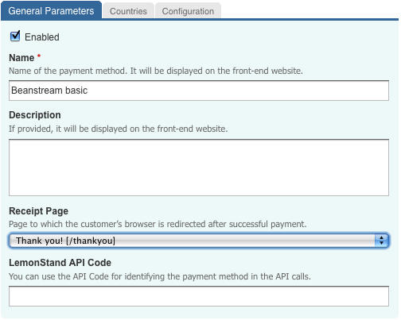
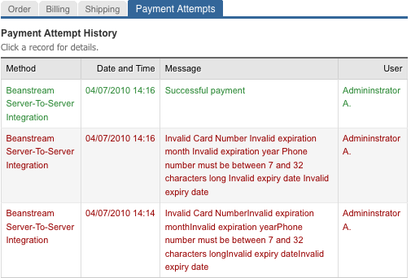
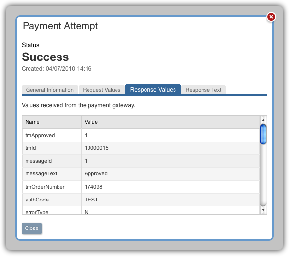
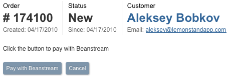

LemonStand Version 1 Has Been Discontinued
This documentation is for LemonStand Version 1. LemonStand is now offered as a cloud-based eCommerce platform.
You can try the new LemonStand and learn about upgrading here.
Using a Redirection Integration Method
This article continues the Developing payment modules article. Please read it before reading this article. Before implementing the redirection integration method, please make sure that your payment gateway supports it.
To begin implementing a new payment module for the redirection integration method, create a payment module class as it described in the previous article. In this article we will show you which specific methods should be added to the module class.
You can download the redirection payment module template here: redirection_payment_template.zip
The archive contains a module class file and a corresponding directory with partials required for the module. You can rename the module file, PHP class and the directory and begin implementing your own payment module, following the description in this article.
How the redirection payment method works
With the redirection payment method, when a customer clicks the Pay button on a LemonStand store, he is redirected to the secure payment form provided by the payment gateway and hosted on the gateway server. Usually the redirection is achieved using a HTML form with the ACTION attribute pointing to the payment gateway payment processing script. The form contains hidden fields providing all information required by the payment gateway - the order amount, order number and some other parameters.
On the secure payment page the customer enters his payment information such as the credit card number, name and address. After that he clicks the Submit button and the gateway processes the payment. Usually after submitting the payment form the customer is automatically redirected back to the store website, however some payment gateways do not support this feature.
Also, many payment gateways can to send a payment notification to the store website, in the background. In PayPal Standard this feature is known as Instant Payment Notification. Payment modules can handle this request and if the transaction was successful, update the order status and mark the order as paid.
You need to read the payment gateway integration guide carefully in order to find out what information has to be sent to the gateway and whether the gateway supports customer return to the store website and whether it supports the store background notification feature.
Processing gateway response
In the Developing payment modules article we mentioned that the process_payment_form() method should be implemented in all payment module classes. For the redirection integration method this method should be declared but should not contain any code:
public function process_payment_form($data, $host_obj, $order, $back_end = false)
{
/*
* We do not need any code here since payments are processed on the payment gateway server.
*/
}Redirecting a customer to the payment gateway
In the Developing payment modules article we explained that each payment module should include a payment form partial template file (please see the Payment form partial templates section). For redirection payment modules, the payment form should contain only hidden fields. Below is a screenshot of the Beanstream basic integration method payment page:

The "Please click the button to pay with Beanstream" phrase and the button (and a number of hidden fields) are defined in the front_end_partial.htm (and front_end_partial.twig) partial template file of the Banstream Basic payment module.
Names of hidden fields, their values, and the form ACTION attribute value depend on a payment gateway you use. Below is a code of the Beanstream payment partial template file (front_end_partial.htm, front_end_partial.twig):
<p>Please click the button to pay with Beanstream</p>
<form action="<?= $payment_method_obj->get_form_action($payment_method) ?>" method="post">
<?
$hidden_fields = $payment_method_obj->get_hidden_fields($payment_method, $order);
foreach ($hidden_fields as $name=>$value):
?>
<? if (!is_array($value)): ?>
<input type="hidden" name="<?= $name ?>" value="<?= h($value) ?>"/>
<? else: ?>
<? foreach ($value as $item): ?>
<input type="hidden" name="<?= $name ?>" value="<?= h($item) ?>"/>
<? endforeach ?>
<? endif ?>
<? endforeach ?>
<input type="submit" value="Pay with Beanstream"/>
</form><p>Please click the button to pay with Beanstream</p>
<form action="{{ payment_method_obj.get_form_action(payment_method) }}" method="post">
{% set hidden_fields = payment_method_obj.get_hidden_fields(payment_method, order) %}
{% for name, value in hidden_fields %}
{% if value is not array %}
<input type="hidden" name="{{ name }}" value="{{ value }}"/>
{% else %}
{% for item in value %}
<input type="hidden" name="{{ name }}" value="{{ item }}"/>
{% endfor %}
{% endif %}
{% endfor %}
<input type="submit" value="Pay with Beanstream"/>
</form>As you can see the code is rather simple. It creates a FORM element and a set of hidden fields. The partial code uses the $payment_method_obj variable which refers to the payment module class variable - the class you are developing. The get_form_action() and get_hidden_fields() methods are defined in the Beanstream payment module class. There are no rules which require you to have these methods defined in the payment module class. You can specify the form ACTION attribute value right in the partial code, and define all hidden fields required by your payment gateway right in the HTML. But this is not a very good idea, because:
- The payment gateway processing script could be moved to another location and your payment module will stop working, because the form ACTION attribute in the already existing payment partials will point to a wrong location. That is why it is better to define a method (get_form_action() in this case) inside the module class, which will return a actual URL for the form ACTION attribute.
- A set of required fields could be changed by the payment gateway and the payment method will stop working. But if you define a method (get_hidden_fields() in our case) returning a list of hidden field names and values in your payment module class, the payment module users will only need to update the class declaration, without rewriting the payment partial.
The $payment_method and $order variables are always available on the Pay page (on a page which uses the shop:pay action). The $payment_method object contains all fields which you defined in the build_config_ui() method of your payment module. The $order variable is an instance of the Shop_Order class. This object represents a specific order. You need this variable in order to generate values for hidden fields, for example for the order amount field.
The code below demonstrates the implementation of the get_form_action() method in Beanstream Basic payment module:
public function get_form_action($host_obj)
{
return "https://www.beanstream.com/scripts/payment/payment.asp";
}The following code snippet demonstrates the implementation of the get_hidden_fields() method of the Beanstream Basic payment module:
public function get_hidden_fields($host_obj, $order, $backend = false)
{
$result = array();
$amount = $order->total;
$userIp = Phpr::$request->getUserIp();
$fields = array();
$fields['merchant_id'] = $host_obj->merchant_id;
$fields['trnOrderNumber'] = $order->id;
$fields['trnAmount'] = $amount;
$approved_page = null;
if (!$backend)
{
$return_page = $order->payment_method->receipt_page;
if ($return_page)
$approved_page = root_url($return_page->url.'/'.$order->order_hash.'?utm_nooverride=1', true);
}
else
$approved_page = root_url(url('/shop/orders/payment_accepted/'.$order->id.'?utm_nooverride=1&nocache'.uniqid()), true);
if ($approved_page)
$fields['approvedPage'] = $approved_page;
return $fields;
}
The method returns an array, containing names and values of hidden fields required by the Beanstream Basic payment integration method. Values of some fields are fetched from the first method parameter, which contains the module configuration field values. Other values are fetched form the order object. The third method parameter ($backend) is used for generating the payment form field values for the case when the payment form is accessed from the Administration Area Pay Order page. We will describe this case later in this article.
Sending the receipt page URL to the gateway
Beanstreab Basic payment gateway supports a customer return to the store website after a successful payment. It requires a hidden field with the approvedPage name to be presented in the transaction registration request. This field should be added to the payment form, and therefore the get_hidden_fields() method should return it. We can use an URL of the Receipt page for this field value. The Receipt Page field is added automatically by LemonStand to configuration forms of all payment methods:

The $receipt_page field of the $host_obj object contains a reference to the Cms_Page object, corresponding a page selected in the Receipt Page field of the configuration form. The Cms_Page class has the $url field, which contains a URL of the receipt page, relative to the store root URL. Payment gateways usually require absolute URLs for return pages. The root_url() function returns an absolute URL corresponding a relative URL specified in the first function parameter. The second function parameter should have the TRUE value in order the function to add a protocol prefix to the URL, for example: http://your-store.com/receipt
LemonStand receipt pages (the shop:payment_receipt action) require the order identifier (order hash) to be specified in the URL as a last URL segment: http://your-store.com/receipt/xxx-xxx-xxx. This can by achieved by adding the $order->order_hash field value to the receipt page URL. Also, the Google Analytics Ecommerce Tracking feature requires the ?utm_nooverride=1 suffix to be added to the URL. The final URL of the receipt page is calculated using the following line of code:
$approved_page = root_url($return_page->url.'/'.$order->order_hash.'?utm_nooverride=1', true);
The get_hidden_fields() method and the PHP code in the payment partial generate the following HTML markup on the Pay page for the Beanstream Basic integration method:
<form action="https://www.beanstream.com/scripts/payment/payment.asp" method="post"> <input type="hidden" name="merchant_id" value="111111111"/> <input type="hidden" name="trnOrderNumber" value="174100"/> <input type="hidden" name="trnAmount" value="32.71"/> <input type="hidden" name="approvedPage" value="http://your-store.com/receipt/d8f8de1bb531d8de4a93574d9f8adcb1?utm_nooverride=1"/> <input type="submit" value="Pay with Beanstream"/> </form>
Registering a payment notification URL
As we mentioned earlier in this article, some payment gateways support the payment notification feature, which allows the payment gateway to send a payment notification to LemonStand in the background. Payment modules for such payment gateways should be able to process the incoming request, and in case if the transaction was approved by the gateway, mark the order as paid and send it to a specific status, selected in the payment method configuration form.
Payment modules can register so-called access points. Access points are special hidden pages, which can be accessed by payment gateways. Each access point has a URL and a method in the payment method class, which handles the URL. Access points should be registered in the register_access_points() method of the payment module class. For example, the Beanstream Basic payment module registers a single access point in the following way:
public function register_access_points()
{
return array(
'ls_beasnstream_notification'=>'process_payment_notification'
);
}The method should return an array with keys corresponding access point URLs, and values corresponding the payment module class methods responsible for handling the URLs. The URL of the access point registered in the example above is ls_beasnstream_notification. If a store root URL is http://your-store.com, then the access point URL is http://your-store.com/ls_beasnstream_notification. This URL is handled by the process_payment_notification(), which should be defined in the payment module class. You can define as many access points as your payment module needs. Access point URLs (the keys of the returning array) cannot contain the slash symbol or spaces.
Important! Payment method access point names should start with the ls_ prefix.
Access point handling methods should accept a single function parameter. LemonStand uses this parameter for passing segments of the URL to the method. For example, if the access point URL is http://your-store.com/ls_beasnstream_notification, and the invoked URL is http://your-store.com/ls_beasnstream_notification/12/31, the method parameter will contain an array with 2 elements - 12 and 31.
Some payment gateways require the payment notification URL to be presented in the payment request, as a hidden field. For this case you can implement the same approach as we described for the approvedPage field above. Other payment gateways, including the Beanstream Basic, allow to specify the payment notification URL in the payment gateway configuration form (inside the payment gateway merchant account).
Usually payment gateways send payment notifications as a POST request, and all transaction-related information is available as POST fields. Below is an implementation of the Beanstream Basic payment notification handling method:
public function process_payment_notification($params)
{
$fields = $_POST;
$order = null;
try
{
/*
* Find order and load payment method settings
*/
$order_id = post('trnOrderNumber');
if (!$order_id)
throw new Phpr_ApplicationException('Order not found');
$order = Shop_Order::create()->find($order_id);
if (!$order)
throw new Phpr_ApplicationException('Order not found.');
if (!$order->payment_method)
throw new Phpr_ApplicationException('Payment method not found.');
$order->payment_method->define_form_fields();
$payment_method_obj = $order->payment_method->get_paymenttype_object();
if (!($payment_method_obj instanceof Shop_Beanstream_Basic_Payment))
throw new Phpr_ApplicationException('Invalid payment method.');
/*
* Validate the transaction
*/
if (post('trnAmount') != $order->total)
throw new Phpr_ApplicationException('Invalid transaction data.');
if (post('trnApproved') != 1)
throw new Phpr_ApplicationException('Transaction not approved: '.post('messageText'));
if ($order->set_payment_processed())
{
Shop_OrderStatusLog::create_record($order->payment_method->order_status, $order);
$this->log_payment_attempt($order, 'Successful payment', 1, array(), $fields, null);
}
}
catch (Exception $ex)
{
if ($order)
$this->log_payment_attempt($order, $ex->getMessage(), 0, array(), $fields, null);
throw new Phpr_ApplicationException($ex->getMessage());
}
}The code has 3 functional parts.
Validating the incoming request
First, the code checks POST fields and validates the request. Each payment gateway posts different data in payment notification requests and you need to refer to your payment gateway integration guide in order to learn which POST fields are available. The code in the example above loads the order identifier from the trnOrderNumber POST field. This field is specific for the Beanstream gateway. After that the code loads the $order object from the database and performs some additional checks.
Updating the order status and logging the payment attempt
After validating the request data, the method checks the transaction status, received from the payment gateway. If the transaction has been successfully processed by the payment gateway, the code updates the order status, marks the order as paid and adds the payment attempt log record. To change the order status the code calls the Shop_OrderStatusLog::create_record() method:
Shop_OrderStatusLog::create_record($order->payment_method->order_status, $order);
The Shop_OrderStatusLog::create_record() method has 2 parameters - the destination order status identifier and the order object. The order status identifier is available through the $order->payment_method->order_status field. The $order->payment_method field contains all fields defined in the build_config_ui() method of the payment module, which we described in the previous article.
To mark the order as paid the code uses the following call:
$order->set_payment_processed();
And finally, the method creates the payment attempt using the following call:
$this->log_payment_attempt($order, 'Successful payment', 1, array(), $fields, null);
The log_payment_attempt() method is a built-in method of any payment module class, defined in the Shop_PaymentType class. The method has the following parameters:
- $order - an order object to log the payment attempt for.
- $message - a message string, describing the attempt result. For successful payments you can use the "Successful payment" string. For error conditions use an error message returned by the payment gateway.
- $is_successful - indicates whether the attempt was successful.
- $request_array - a list of fields which the payment module posted to the payment gateway. For redirection integration methods, we do not send any requests directly to the payment gateway, so you can pass an empty array value to this parameter.
- $response_array - a list of fields received from the payment gateway, as array.
- $response_text - a raw response text received from the payment gateway. In some cases the response text is not available, and you can pass the NULL value to the parameter.
- $ccv_response_code - card code verification response code, optional.
- $ccv_response_text - card code verification response text, optional.
- $avs_response_code - address verification response code, optional.
- $avs_response_text - address verification response text, optional.
Payment attempts which you log using the log_payment_attempt() method are displayed on the Order Preview page:

LemonStand users can click on a payment attempt record and view all details which you specified in the log_payment_attempt() method call:

As payment attempt details can be accessed by LemonStand users, you should remove any credit-card and payment gateway API credentials data from the request and response arrays and from the gateway raw response text.
With the Beanstream basic integration method we do not send any credit card details to the gateway, and the gateway do not post card information or API credentials to the payment notification access point, so we do not need to remove any elements from the gateway response array. For other cases you can use the PHP unset() function for removing specific elements from arrays. Usually we define a special method which strips specific fields from a given array, and call the method for request and response array. For example, below is a data cleaning method from the HSBC payment module:
private function prepare_fields_log($fields)
{
unset($fields['ClientId']);
unset($fields['Name']);
unset($fields['Password']);
unset($fields['Cvv2Val']);
if (isset($fields['Number']))
$fields['Number'] = '...'.substr($fields['Number'], -4);
return $fields;
}
It removes the API credential fields from the input array, and leaves only 4 last digits in credit card numbers. We use this method to process the request and response arrays in the following way:
$this->log_payment_attempt($order, 'Successful payment', 1, $this->prepare_fields_log($request_fields), $this->prepare_fields_log($response_fields), null);
Logging invalid requests
The final part of the payment notification handling method catches all errors which could occur inside the method and logs invalid request using the log_payment_attempt() method. The important part of the error handling code is the PHP condition which checks whether the order was loaded from the database. Only in this case the method logs the payment attempt:
if ($order) $this->log_payment_attempt($order, $ex->getMessage(), 0, array(), $fields, null);
Back-end payment forms
All payment modules must provide a form for paying an order from the LemonStand Administration Area. Payment modules which implement the redirection integration method must provide a special partial file, which should be placed to the payment module directory. The partial file can have any name, but we usually use the backend_payment_form.htm file name. The back-end payment partial should be registered in the get_info() method of the payment module class, using the custom_payment_form parameter:
public function get_info()
{
return array(
'name'=>'Beanstream Basic Integration',
'description'=>'A basic HTTP POST integration. The customer’s browser will be pointed to the Beanstream server at the time of processing.',
'custom_payment_form'=>'backend_payment_form.htm'
);
}Back-end payment partials are rendered by LemonStand on the Pay page in the Administration Area. For example, this is a screenshot of the Pay page for an order which uses the Beanstream Basic integration method:

The "Click the button to pay with Beanstream" label, the "Pay with Beanstream" buttons and a set of hidden fields are defined in the back-end payment form partial. Below is a code of the Beanstream Basic back-end payment form partial:
<form action="<?= $payment_method_obj->get_form_action($payment_method) ?>" method="post">
<?
$hidden_fields = $payment_method_obj->get_hidden_fields($payment_method, $order, true);
foreach ($hidden_fields as $name=>$value):
?>
<input type="hidden" name="<?= $name ?>" value="<?= h($value) ?>"/>
<? endforeach ?>
<?= backend_button('Pay with Beanstream', array('href'=>"#", 'onclick'=>'$(this).getForm().submit(); return false;')) ?>
</form>
The code is very similar to the front-end payment partial template file described above. But there are some differences. In the get_hidden_fields() method call the last parameter is TRUE. It notifies the get_hidden_fields() method that the form is generated for the Administration Area (in contrast to the front-end website Pay page). If you look to the method implementation above, you will see that it checks the $backend parameter value, and if it is TRUE, it sets the approvedPage field value using the following code:
$approved_page = root_url(url('/shop/orders/payment_accepted/'.$order->id.'?utm_nooverride=1&nocache'.uniqid()), true);The /shop/orders/payment_accepted/ page is a page inside the Administration Area. It displays the "The order has been successfully paid" message. Always use the code demonstrated above for obtaining a URL of a return page for the back-end payment forms.
The second difference between the back-end and front-end payment form partials is the Pay button code. In the Administration Area we use the backend_button() function for generating a standard Administration Area button. Use the code demonstrated above for all payment methods.
Conclusion
The complexity of implementing of a specific payment module depends on complexity of the payment gateway integration API and on the quality of the payment gateway integration guide. LemonStand API allows to implement almost any payment module. We cannot provide you with all possible solutions and code examples in a single Wiki article. We suggest you to explore existing payment modules and learn how they solve different tasks. Below is a list of some existing redirection payment modules
- PayPal Standard - this module is interesting because it implements 2 access points - for the Instant Payment Notification and for the Auto Return PayPal features. The module file name is shop_paypal_pro_payment.php.
- E-xact Hosted Checkout - the module implements an access point for processing the E-xact Silent Post and Return features. The file name is shop_exact_hosted_checkout_payment.php.
Next: Using a Server-to-Server Integration Method
Previous: Guide for Developing a Payment Module
Return to Guide for Developing a Payment Module